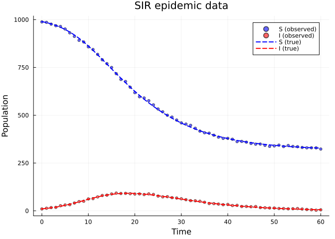
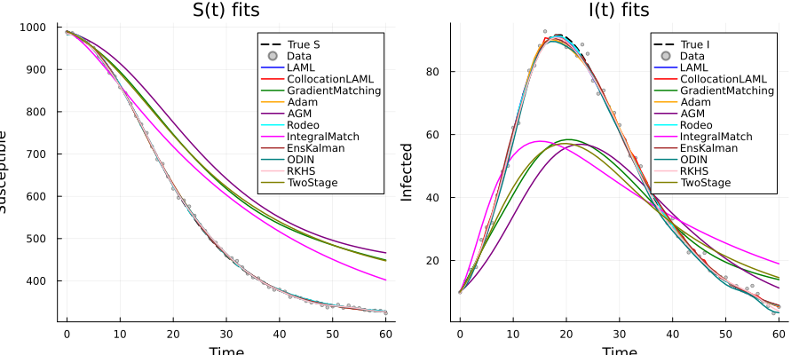
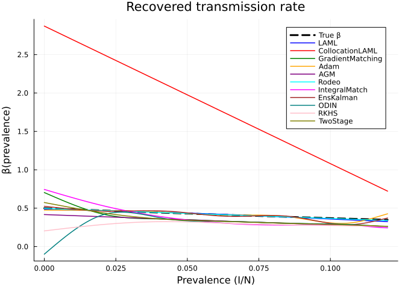
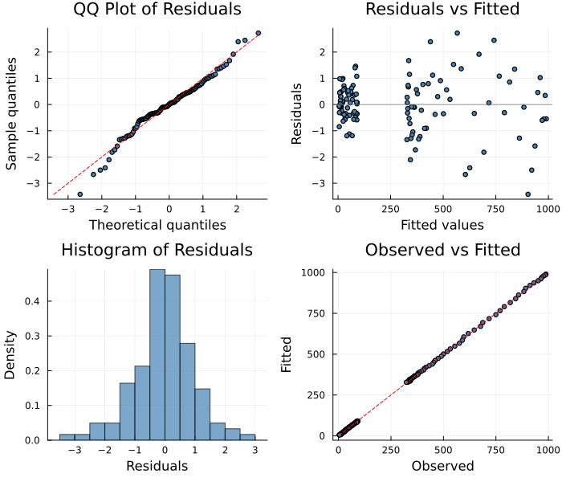

Solver Comparison: Eleven Methods on One Problem
Overview
PartiallySpecifiedModels.jl provides 22 different solvers for fitting partially specified models. This vignette compares 11 representative methods on the same test problem, highlighting the diversity of algorithmic approaches (ProfileLikelihoodSolver is listed in the table for context but is demonstrated separately in Vignette 32 rather than fitted here):
| Solver | Approach | Integration? | Smoothing |
|---|---|---|---|
| LAML | Laplace approximate marginal likelihood | Yes | Automatic (REML) |
| CollocationLAML | Collocation + continuation penalty | No (collocation) | Automatic (REML) |
| GradientMatching | Match observed derivatives to ODE RHS | No | Automatic (REML) |
| AdaptiveGradientMatching | GP-based gradient matching with adaptive mismatch | No | Eigendecomposition + penalty |
| AdamSolver | Direct optimization (Adam) via ODE integration | Yes | Manual (loss-based) |
| RodeoSolver | Probabilistic ODE solving (Kalman filter/smoother) | Implicit (IBM prior) | Automatic (marginal likelihood) |
| IntegralMatchingSolver | Match cumulative integrals of ODE RHS | No | Manual (penalty-based) |
| EnsembleKalmanSolver | Ensemble Kalman Inversion | Yes | Ensemble-based |
| ODINSolver | ODE-Informed GP regression | No | GP marginal likelihood |
| RKHSSolver | Kernel ridge regression (RKHS) | No | RKHS norm penalty |
| ProfileLikelihoodSolver | Profile likelihood for identifiability | Yes | Fixed λ̂ (from LAML fit) |
| TwoStageSolver | Smooth-then-differentiate | No | Manual (penalty-based) |
This vignette fits the same model and data with all methods, comparing accuracy, runtime, and recovered functional forms.
Setup
using PartiallySpecifiedModels
using PartiallySpecifiedModels: solve
using OrdinaryDiffEq
using Plots
using Random
Random.seed!(42)TaskLocalRNG()The Test Problem: SIR with Behavioural Response
We consider an SIR epidemic model where the transmission rate $\beta$ depends on disease prevalence — a common behavioural response in epidemiology where contact rates decline as people become aware of an epidemic:
\[\begin{aligned} \frac{dS}{dt} &= -\beta(I/N) \cdot S \cdot I/N \\ \frac{dI}{dt} &= \beta(I/N) \cdot S \cdot I/N - \gamma I \\ \frac{dR}{dt} &= \gamma I \end{aligned}\]
The true transmission rate is $\beta(\text{prev}) = 0.5 \, e^{-3 \cdot \text{prev}}$, which we treat as unknown.
Generate synthetic data
function sir_true!(du, u, p, t)
S, I, R = u
N = S + I + R
prev = I / N
β = 0.5 * exp(-3.0 * prev)
du[1] = -β * S * I / N
du[2] = β * S * I / N - 0.25 * I
du[3] = 0.25 * I
end
u0 = [990.0, 10.0, 0.0]
tspan = (0.0, 60.0)
prob_ode = ODEProblem(sir_true!, u0, tspan)
sol_ode = OrdinaryDiffEq.solve(prob_ode, Tsit5(), saveat=1.0)
data_t = sol_ode.t
σ_S, σ_I = 5.0, 2.0
noise = hcat(σ_S .* randn(length(data_t)), σ_I .* randn(length(data_t)))
data_SI = max.(hcat(sol_ode[1,:], sol_ode[2,:]) .+ noise, 0.01)
p1 = scatter(data_t, data_SI[:, 1], label="S (observed)", ms=3, alpha=0.6, color=:blue)
scatter!(p1, data_t, data_SI[:, 2], label="I (observed)", ms=3, alpha=0.6, color=:red)
plot!(p1, sol_ode.t, sol_ode[1,:], label="S (true)", lw=2, color=:blue, ls=:dash)
plot!(p1, sol_ode.t, sol_ode[2,:], label="I (true)", lw=2, color=:red, ls=:dash)
plot!(p1, xlabel="Time", ylabel="Population", title="SIR epidemic data")
Define the PSM
function sir!(du, u, p, t)
S, I, R = u
N = S + I + R
prev = I / N
β_val = p.β(prev)
foi = max(β_val, 0.001) * S * I / N
du[1] = -foi
du[2] = foi - 0.25 * I
du[3] = 0.25 * I
end
approx_β = BSplineApproximator(:β, (0.0, 0.15), 8; initial=0.4)
prob = PSMProblem(sir!, u0, tspan, [approx_β];
data_times=data_t, data_values=data_SI,
obs_to_state=[1, 2], known_params=(γ=0.25,), solver=Tsit5())PSMProblem{typeof(sir!), Vector{Float64}, Gaussian, Tsit5{typeof(OrdinaryDiffEqCore.trivial_limiter!), typeof(OrdinaryDiffEqCore.trivial_limiter!), Static.False}}(sir!, [990.0, 10.0, 0.0], (0.0, 60.0), BSplineApproximator[BSplineApproximator(:β, (0.0, 0.15), 8, PartiallySpecifiedModels.var"#6#7"{Float64}(0.4))], [0.0, 1.0, 2.0, 3.0, 4.0, 5.0, 6.0, 7.0, 8.0, 9.0 … 51.0, 52.0, 53.0, 54.0, 55.0, 56.0, 57.0, 58.0, 59.0, 60.0], [988.1832125927411 9.896037666331825; 985.8975437423887 13.461390776142522; … ; 329.35354655287034 3.2084058156376694; 323.05533131939933 5.286766967095861], [1.0 1.0; 1.0 1.0; … ; 1.0 1.0; 1.0 1.0], [1, 2], (γ = 0.25,), Gaussian(), Tsit5{typeof(OrdinaryDiffEqCore.trivial_limiter!), typeof(OrdinaryDiffEqCore.trivial_limiter!), Static.False}(OrdinaryDiffEqCore.trivial_limiter!, OrdinaryDiffEqCore.trivial_limiter!, static(false)), Dict{Symbol, Any}(), false, Float64[], nothing)Fit with Each Solver
1. LAML (Laplace Approximate Marginal Likelihood)
The flagship solver: iteratively estimates B-spline coefficients and smoothing parameter $\lambda$ via marginal likelihood, akin to REML in mixed models. For strongly nonlinear models like prevalence-dependent transmission, initial_lambda and warmup keep the early IRLS steps well-conditioned:
LAML: data_loss=1347.2, edf=3.0, time=8.2s2. CollocationLAML
Avoids ODE integration by penalising deviation from the ODE via collocation. A continuation schedule gradually increases the ODE penalty, starting from a pure data-fit and converging toward ODE-consistent solutions.
┌ Warning: CollocationLAML: simulating the fitted dynamics gives a data loss 8468.0× the reported `data_loss`. `fitted_values` are the estimated STATE, which need not lie near any trajectory the dynamics admit, so the reported loss understates the model's error by that factor. See `convergence.simulated_data_loss`.
└ @ PartiallySpecifiedModels ~/Projects/psm/PartiallySpecifiedModels.jl/src/collocation_solver.jl:1269
CollocationLAML: data_loss=771.1, edf=2.0, time=3.3s3. GradientMatching
Estimates derivatives directly from a smooth interpolant of the data, then fits the ODE right-hand side to those derivatives. No ODE integration required — fast but relies on good derivative estimates.
GradientMatching: data_loss=953677.0, edf=8.0, time=2.1s[!NOTE]
data_lossis comparable across every solver in this vignette: each one reports the weighted residual sum of squares of its fitted model, evaluated at the fitted parameters. Eight of the eleven obtain that trajectory by integrating the dynamics fromu0.CollocationLAML,ODINSolverandRKHSSolverdo not: they estimate the state trajectory jointly with the coefficients and report that estimate, which is coupled to the fitted parameters but does not start exactly atu0. See thefitted_valuesdocstring for the two conventions.This was not always so.
GradientMatching,TwoStageSolver,IntegralMatchingSolverandAdaptiveGradientMatching(its default, deterministic path) used to report the stage-1 data smoother as theirfitted_values, which made theirdata_lossa function of the data alone — near zero simply because a smoothing spline nearly interpolates its own data, and identical for two problems with completely different dynamics. An earlier version of this callout attributed that near-zero value to these solvers “optimising derivative match rather than data fit”; that explanation was wrong, and the number is now a genuine model-vs-data fit statistic. Gradient matching still never integrates the ODE while fitting — the simulation happens once, at the end, purely for reporting.
4. AdamSolver
Direct optimisation of the B-spline coefficients using the Adam gradient descent algorithm. Integrates the ODE at each step and minimises the mean squared error to data.
AdamSolver: data_loss=1365.0, time=4.1s5. AdaptiveGradientMatching (AGM)
Gaussian process–based gradient matching with adaptive mismatch parameters $\gamma_k$ that control how tightly the GP derivatives must satisfy the ODE. Uses pre-computed eigendecomposition for efficiency and a B-spline smoothing penalty.
AGM: data_loss=1.2387482e6, time=6.0s6. RodeoSolver
Probabilistic ODE solver using an integrated Brownian motion prior and Kalman filter/smoother. The ODE is enforced as pseudo-observations in a state-space model; the marginal likelihood is maximised over B-spline coefficients.
RodeoSolver: data_loss=1505.9, time=13.4s7. IntegralMatchingSolver
Integrates both sides of the ODE and matches the cumulative integrals rather than derivatives. This avoids both derivative estimation (noisy) and full ODE integration (expensive), providing robustness to measurement noise.
IntegralMatching: data_loss=649160.4, time=2.3s8. EnsembleKalmanSolver
Derivative-free ensemble method: maintains a population of parameter particles, propagates each through the ODE, and updates via the Kalman gain. Naturally handles non-smooth objectives and noisy forward models.
EnsembleKalman: data_loss=1328.8, time=2.1s9. ODINSolver
ODE-Informed GP regression: alternates between fitting a Gaussian process to the data and optimising unknown-function parameters against the GP’s derivative estimates. The ODE residual enters the GP marginal likelihood for tighter coupling.
┌ Warning: ODINSolver: simulating the fitted dynamics gives a data loss 13520.0× the reported `data_loss`. `fitted_values` are the estimated STATE, which need not lie near any trajectory the dynamics admit, so the reported loss understates the model's error by that factor. See `convergence.simulated_data_loss`.
└ @ PartiallySpecifiedModels ~/Projects/psm/PartiallySpecifiedModels.jl/src/odin_solver.jl:352
ODIN: data_loss=1067.5, time=4.7s10. RKHSSolver
Trajectory-RKHS estimation (González et al. 2014): the state trajectory is represented in a time-kernel RKHS so its derivative is analytic, and fitting alternates a linear Gauss–Newton solve for the trajectory coefficients with gradient steps on the unknown-function parameters. No ODE integration.
┌ Warning: RKHSSolver: simulating the fitted dynamics gives a data loss 11310.0× the reported `data_loss`. `fitted_values` are the estimated STATE, which need not lie near any trajectory the dynamics admit, so the reported loss understates the model's error by that factor. See `convergence.simulated_data_loss`.
└ @ PartiallySpecifiedModels ~/Projects/psm/PartiallySpecifiedModels.jl/src/rkhs_solver.jl:450
RKHS: data_loss=1033.7, time=4.9s11. TwoStageSolver
Simple baseline: smooth data with cubic splines, then match derivatives with Adam optimisation. Fast and transparent, but the quality of derivative estimation limits accuracy.
TwoStage: data_loss=978159.2, time=2.2sComparison
Fitted trajectories
p_S = plot(sol_ode.t, sol_ode[1,:], label="True S", lw=2, color=:black, ls=:dash,
xlabel="Time", ylabel="Susceptible", title="S(t) fits")
scatter!(p_S, data_t, data_SI[:, 1], label="Data", ms=2, alpha=0.4, color=:gray)
p_I = plot(sol_ode.t, sol_ode[2,:], label="True I", lw=2, color=:black, ls=:dash,
xlabel="Time", ylabel="Infected", title="I(t) fits")
scatter!(p_I, data_t, data_SI[:, 2], label="Data", ms=2, alpha=0.4, color=:gray)
colors = [:blue, :red, :green, :orange, :purple, :cyan, :magenta, :brown, :teal, :pink, :olive]
solvers_done = [
("LAML", sol_laml), ("CollocationLAML", sol_coll),
("GradientMatching", sol_gm), ("Adam", sol_adam),
("AGM", sol_agm), ("Rodeo", sol_rodeo),
("IntegralMatch", sol_im), ("EnsKalman", sol_ek),
("ODIN", sol_odin), ("RKHS", sol_rkhs),
("TwoStage", sol_ts)]
for (i, (name, sol)) in enumerate(solvers_done)
plot!(p_S, data_t, sol.fitted_values[:, 1], label=name, lw=1.5, color=colors[i])
plot!(p_I, data_t, sol.fitted_values[:, 2], label=name, lw=1.5, color=colors[i])
end
plot(p_S, p_I, layout=(1, 2), size=(900, 400))
Recovered transmission rate β(prevalence)
prev_grid = range(0.0, 0.12, length=100)
β_true = [0.5 * exp(-3.0 * p) for p in prev_grid]
p_β = plot(prev_grid, β_true, label="True β", lw=3, color=:black, ls=:dash,
xlabel="Prevalence (I/N)", ylabel="β(prevalence)",
title="Recovered transmission rate")
for (i, (name, sol)) in enumerate(solvers_done)
β_est = [sol.unknown_functions[:β](p) for p in prev_grid]
plot!(p_β, prev_grid, β_est, label=name, lw=1.5, color=colors[i])
end
p_β
Summary table
Solver | Data Loss | Time (s)
--------------------------------------------------
LAML | 1347.2 | 8.2
CollocationLAML | 771.1 | 3.3
GradientMatching | 953677.0 | 2.1
Adam | 1365.0 | 4.1
AGM | 1.2387482e6| 6.0
Rodeo | 1505.9 | 13.4
IntegralMatch | 649160.4 | 2.3
EnsKalman | 1328.8 | 2.1
ODIN | 1067.5 | 4.7
RKHS | 1033.7 | 4.9
TwoStage | 978159.2 | 2.2Diagnostic Plots
A standard 4-panel diagnostic display assesses residual behaviour for the recommended LAML solver.
using PartiallySpecifiedModels: appraise
diag = appraise(sol_laml)
p_qq = scatter(diag.qq_theoretical, diag.qq_sample,
xlabel="Theoretical quantiles", ylabel="Sample quantiles",
title="QQ Plot of Residuals", ms=3, legend=false, color=:steelblue)
mn, mx = extrema(vcat(diag.qq_theoretical, diag.qq_sample))
plot!(p_qq, [mn, mx], [mn, mx], color=:red, ls=:dash, label="")
p_rf = scatter(diag.fitted, diag.residuals,
xlabel="Fitted values", ylabel="Residuals",
title="Residuals vs Fitted", ms=3, legend=false, color=:steelblue)
hline!(p_rf, [0], color=:gray, ls=:dot)
p_hist = histogram(diag.residuals, normalize=:pdf,
xlabel="Residuals", ylabel="Density",
title="Histogram of Residuals", legend=false, color=:steelblue, alpha=0.7)
p_of = scatter(diag.observed, diag.fitted,
xlabel="Observed", ylabel="Fitted",
title="Observed vs Fitted", ms=3, legend=false, color=:steelblue)
mn2, mx2 = extrema(vcat(diag.observed, diag.fitted))
plot!(p_of, [mn2, mx2], [mn2, mx2], color=:red, ls=:dash, label="")
plot(p_qq, p_rf, p_hist, p_of, layout=(2, 2), size=(700, 600))
Durbin-Watson: 1.387, 1.862[!TIP]
See Also
- Vignette 05: Neural Networks — compares approximator types (B-spline, GP, neural)
- Vignette 09: Gradient Matching — detailed integration-free solver comparison
Discussion
Key observations:
LAML uses IRLS (iteratively reweighted least squares) which linearises the ODE around the current parameters. For strongly nonlinear models like this prevalence-dependent SIR, the linearisation quality is poor with default settings. Using
initial_lambda(strong initial smoothing) andwarmup(IRLS iterations before LAML estimation) keeps early steps well-conditioned and dramatically improves convergence.CollocationLAML avoids integration instabilities via collocation and generally performs well, though the continuation schedule requires tuning.
GradientMatching is fast (no integration) but relies entirely on derivative estimates from the data. The quality of derivative estimation determines accuracy.
AdamSolver provides a flexible direct-optimisation approach. With appropriate learning rate tuning, it can reach good fits.
AGM (Adaptive Gradient Matching) offers a principled GP-based framework where mismatch parameters are estimated automatically.
RodeoSolver embeds ODE constraints within a probabilistic state-space model. It provides uncertainty quantification for free (see the Probabilistic Fitting vignette).
IntegralMatchingSolver matches cumulative integrals rather than derivatives, making it the most noise-robust integration-free method. Particularly strong when data are sparse or noisy.
EnsembleKalmanSolver is completely derivative-free — useful when the forward model is non-differentiable, stiff, or computationally opaque. Convergence depends on ensemble size and observation noise scale.
ODINSolver provides a GP-based approach with tighter ODE coupling than simple gradient matching. The alternating GP/ODE optimisation converges reliably for moderately nonlinear problems.
RKHSSolver offers an alternative to B-spline representations: kernel-based function estimation with RBF, Matérn-3/2, or Matérn-5/2 kernels. The RKHS norm penalty controls smoothness like the spline penalty.
TwoStageSolver is the simplest baseline and useful for initialisation or sanity checking.
Recommendations:
- Start with LAML for well-behaved, weakly nonlinear systems. For strongly nonlinear models, increase
initial_lambda(e.g. 10) andwarmup(e.g. 5–10). - Use CollocationLAML or AGM for highly nonlinear or oscillatory dynamics
- Use RodeoSolver when you need uncertainty quantification
- Use IntegralMatchingSolver when data are noisy and you want a robust integration-free method
- Use EnsembleKalmanSolver when gradients are unavailable or the forward model is opaque
- Use RKHSSolver when you want a kernel-based alternative to splines
- Use ProfileLikelihoodSolver (see Vignette 32) for identifiability analysis and confidence intervals
- Use AdamSolver with neural network approximators or when you need maximum flexibility